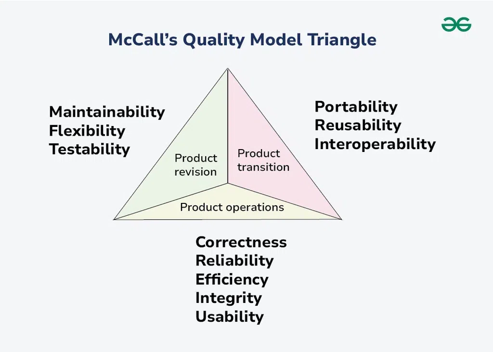
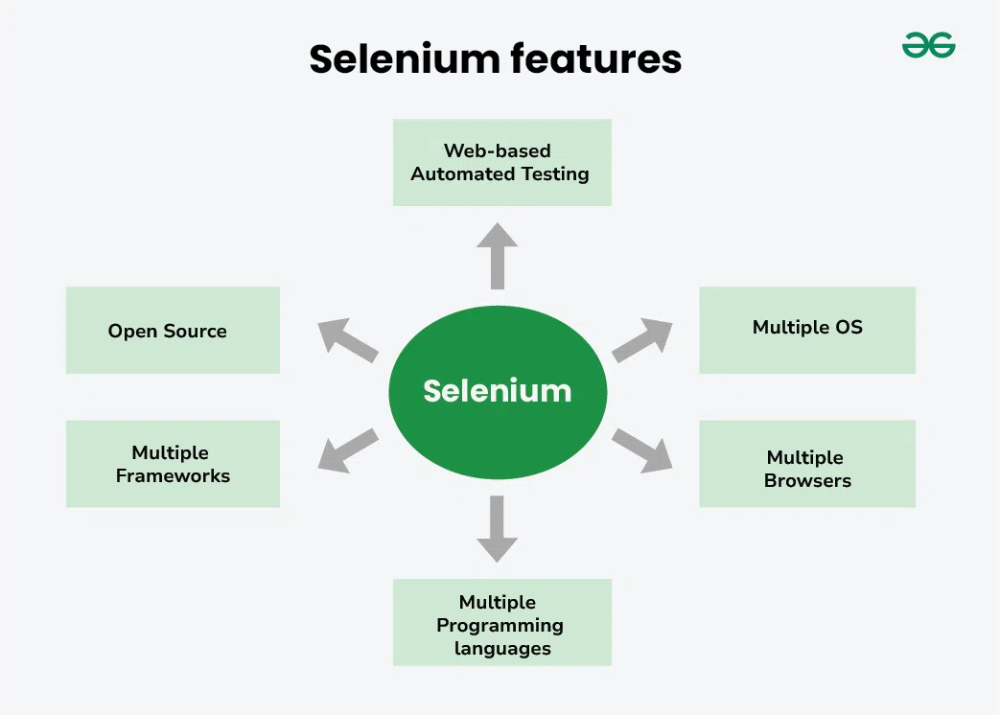
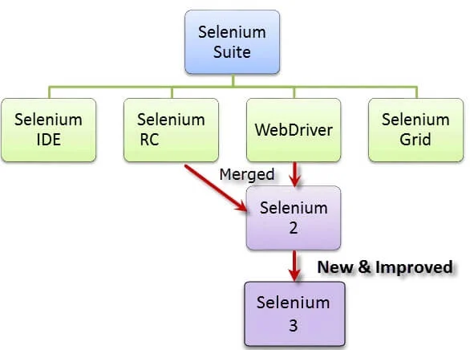

STQA
Explain the McCall’s quality factors. *

McCall's Quality Model, introduced in 1977 by Jim McCall and his colleagues, is a framework for evaluating software quality based on various factors that reflect both user and developer perspectives.
The model identifies several quality factors, categorized into three main areas: Product Operation, Product Revision, and Product Transition.
The model distinguishes between two levels of quality attributes:
- Quality Factors: The higher-level quality attributes that can be accessed directly are called quality factors. These attributes are external. The attributes at this level are given more importance by the users and managers.
- Quality Criteria: The lower or second-level quality attributes that can be accessed either subjectively or objectively are called Quality Criteria. These attributes are internal. Each quality factor has many second-level quality attributes or quality criteria.
Example: The usability quality factor is divided into operability, training, communicativeness, input/output volume, and input/output rate. This model classifies all software requirements into 11 software quality factors. The 11 factors are organized into three product quality factors: Product Operation, Product Revision, and Product Transition.
McCall’s Quality Factors
- Product Operation Factors: These factors relate to the operational performance of the software and how it meets user requirements.
- Correctness
- Reliability
- Efficiency
- Integrity
- Usability
- Product Revision Factors: These factors focus on how easily the software can be modified and maintained.
- Maintainability
- Flexibility
- Testability
- Product Transition Factors: These factors assess how well the software can transition between different environments or systems.
- Portability
- Reusability
- Interoperability
What are CMM model levels.

- Level 1: Initial
- Processes are ad hoc and chaotic.
- Success depends on individual efforts rather than defined processes.
- There is little to no documentation, making it difficult to replicate successes.
- Level 2: Repeatable
- Basic project management processes are established.
- Processes are documented enough to allow for the repetition of earlier successes on similar projects.
- Focus is on planning and tracking project performance.
- Level 3: Defined
- Processes are well-defined and documented.
- Standardized processes are established across the organization.
- Emphasis is placed on process consistency and integration.
- Level 4: Managed
- Processes are quantitatively managed and controlled.
- Performance metrics are used to ensure that processes meet defined quality standards.
- Management can predict process performance based on data analysis.
- Level 5: Optimizing
- Focus is on continuous process improvement through innovative practices.
- Organizations actively seek ways to enhance process performance and efficiency.
- Emphasis on defect prevention and leveraging new technologies for improvement.
What is test planning? *
Test planning is a crucial aspect of the software testing lifecycle, involving the creation of a detailed document that outlines the objectives, scope, resources, and processes for testing a software product. Here’s a comprehensive overview:

Testing Process
- Analyze the Product: Conduct in-depth interviews and product walkthroughs to gain a comprehensive understanding of the product's objectives, target audience, and requirements.
- Design the Test Strategy: Develop a comprehensive test strategy document that outlines the scope of testing, types of tests, risks, and test logistics.
- Define Test Objectives and Expected Results Establish: clear test objectives and expected outcomes for each aspect of the software.
- Define Test Criteria: Establish suspension and exit criteria to define the benchmarks for suspending or completing testing activities.
- Plan Resources: Create a detailed list of all the resources required for project completion and allocate them effectively.
- Plan the Test Environment: Establish a suitable test environment that closely resembles real-world conditions.
- Schedule and Estimate: Break down the testing project into smaller tasks, allocate time and effort, and create a detailed schedule.
- Determine Test Deliverables: Identify the list of documents, tools, and other equipment required for testing activities.
Explain the structure of testing group. *

- Usability Test Engineer: Focuses on evaluating the product's user interface and ensuring it is easy to use and understand.
- Manual Testing Engineer: Performs manual tests by executing test cases and verifying the product's functionality.
- Automated Test Engineer: Develops and executes automated test scripts to improve efficiency and test coverage.
- Network Test Engineer: Tests the product's network performance and compatibility with different network configurations.
- Test Library and Configuration Specialist: Manages the test environment, including test data and configuration settings.
- Tester: Performs general testing tasks, including executing test cases and reporting defects.
What are different types of Integration testing? *

- Integration Testing is the overall process of combining individual components or modules of a software system and testing them together to verify their interactions and ensure they work as intended.
- Incremental Integration Testing is a strategy where modules are integrated in a systematic and incremental manner. There are three main approaches within this strategy:
- Bottom-up Approach: Starts with testing the lowest-level modules first and then gradually integrating them with higher-level modules. This approach is suitable for systems with a clear hierarchical structure.
- Top-down Approach: Starts with testing the highest-level module first and then integrating it with lower-level modules. This approach is useful when the overall system structure is well-defined.
- Sandwich Approach: Combines both bottom-up and top-down approaches, where both high-level and low-level modules are tested and integrated simultaneously. This approach is effective when the system has a complex structure.
- Big Bang Integration Testing is a strategy where all the modules are integrated at once and tested as a single unit. This approach can be risky as it can be difficult to isolate and identify defects if problems arise. It is often used in smaller projects or when the system has a simple structure.
Explain the process of test suite prioritization with its type in detail with example. *
Test suite prioritization is a critical process in software testing that involves ranking test cases based on their importance, risk, or other relevant criteria.
This ensures that the most crucial tests are executed first, optimizing the use of limited testing resources and improving overall software quality.
Process of Test Suite Prioritization
- Identify Test Cases: Begin by compiling a comprehensive list of all test cases within the test suite. This includes functional, regression, performance, and other types of tests.
- Define Criteria for Prioritization: Establish clear criteria for prioritizing test cases. Common criteria include:
- Risk: The potential impact of a defect in the functionality being tested.
- Business Value: The importance of the feature to end-users or stakeholders.
- Execution Time: The time required to execute each test case.
- Historical Defect Data: Past defect rates associated with specific functionalities.
- Assign Priority Levels: Based on the defined criteria, assign priority levels to each test case. This can be done using numerical values (e.g., 1 for high priority, 2 for medium, and 3 for low) or descriptive labels (e.g., critical, important, optional).
- Execute Test Cases: Begin executing test cases based on their assigned priority levels. Focus on high-priority tests first to ensure critical functionalities are validated early in the testing cycle.
- Review and Adjust Priorities: Continuously review and adjust priorities based on feedback from testing results, changes in requirements, or new risks identified during the testing process.
Types of Test Case Prioritization
- Risk-Based Prioritization:
- Description: Test cases are prioritized based on the risk associated with the functionality being tested. Higher-risk areas receive higher priority.
- Example: In an e-commerce application, payment processing features would be prioritized over less critical features like user profile updates due to the higher risk of financial loss if defects occur.
- Requirement-Based Prioritization:
- Description: Test cases are prioritized according to the importance of the requirements they cover. Requirements that are critical to business operations are given precedence.
- Example: If a new feature allows users to place orders, tests covering this feature would be prioritized over tests for less critical features like user preferences.
- Business Value-Based Prioritization:
- Description: This approach prioritizes test cases based on their business value or impact on revenue generation.
- Example: A feature that directly affects customer retention or sales would be prioritized higher than a feature that has minimal impact on user experience.
- Time-Based Prioritization:
- Description: Test cases are prioritized based on their execution time; quicker tests are executed first.
- Example: Simple unit tests that run quickly may be executed before more complex integration tests that take longer to complete.
- Version-Specific Prioritization:
- Description: This type focuses on prioritizing test cases relevant to specific versions of the software after changes have been made.
- Example: After a new version is released with significant changes in the user interface, tests related to those changes would be prioritized for regression testing.
- General Test Case Prioritization:
- Description: Involves prioritizing test cases that will be useful across multiple future releases without specific knowledge of modifications.
- Example: Core functionality tests that apply across various versions of an application would be prioritized for execution before any version-specific tests.
What is automation testing tool? *
Automation testing tools are software applications designed to automate the execution of tests in the software development process. These tools enhance testing efficiency, reduce human error, and allow for more extensive test coverage compared to manual testing.
Types of Automation Testing Tools
- Functional Testing Tools:
- Selenium: An open-source tool widely used for automating web applications across different browsers and platforms.
- QTP/UFT (Unified Functional Testing): A commercial tool for functional and regression testing of applications.
- Performance Testing Tools:
- Apache JMeter: An open-source tool used for load testing and measuring the performance of web applications.
- LoadRunner: A commercial performance testing tool that simulates virtual users to test application performance under load.
- API Testing Tools:
- Postman: A popular tool for testing APIs by sending requests and validating responses.
- SoapUI: An open-source tool for testing SOAP and REST APIs.
- Mobile Testing Tools:
- Appium: An open-source tool for automating mobile applications on both Android and iOS platforms.
- Katalon Studio: A versatile tool that supports web, mobile, and API testing.
Benefits of Automation Testing
- Increased Efficiency: Automated tests can be executed much faster than manual tests, allowing for more tests to be run in less time.
- Consistency and Reliability: Automated tests eliminate human error, ensuring that tests are executed in the same way every time.
- Enhanced Test Coverage: Automation allows for a larger number of test cases to be executed, increasing overall test coverage.
- Early Bug Detection: Automated tests can be integrated into CI/CD pipelines, enabling early detection of defects before they reach production.
What is JIRA testing tool.

JIRA is a powerful tool developed by Atlassian, primarily used for bug tracking, issue tracking, and project management. It is widely adopted in software development environments due to its flexibility and robust features.
Key Features of JIRA:
- Issue Tracking: JIRA allows teams to create, track, and manage issues or bugs throughout the software development lifecycle. Each issue can be assigned a status, priority, and resolution type.
- Project Management: The tool supports various project management methodologies, including Agile (Scrum and Kanban), enabling teams to plan sprints, track progress, and manage backlogs efficiently.
- Customizable Workflows: JIRA provides the ability to customize workflows according to the team's processes, allowing for better alignment with organizational needs.
- Integration Capabilities: JIRA integrates seamlessly with other development tools and platforms, enhancing collaboration between development and testing teams. This includes integration with CI/CD tools, test management tools, and version control systems.
- Reporting and Dashboards: Users can generate reports and dashboards that provide insights into project performance, team productivity, and issue resolution metrics. This helps in making data-driven decisions.
- Collaboration Tools: JIRA facilitates communication among team members through comments, notifications, and mentions within issues, ensuring everyone stays informed about project developments.
What is Bugzilla testing tool? *
Bugzilla is an open-source bug tracking tool developed by the Mozilla Foundation, designed to help software development teams track and manage bugs and issues in their projects. It is widely used for its robust features that facilitate effective communication and collaboration among team members.
Key Features of Bugzilla
- Issue Tracking: Bugzilla allows users to create, manage, and track bugs throughout the software development lifecycle. Each bug can be categorized with details such as status, severity, and resolution.
- Advanced Search Capabilities: Users can perform simple and advanced searches to find specific bugs based on various criteria, including status, product, and keywords.
- Email Notifications: The tool provides customizable email notifications to keep users informed about changes or updates related to bugs they are following.
- Time Tracking: Bugzilla includes features for tracking the time spent on fixing bugs, helping teams manage their workload effectively.
- Customization and Localization: The tool can be tailored to meet the specific needs of an organization, including custom fields and localization options for different languages.
- Reporting Tools: Bugzilla offers advanced reporting capabilities that allow users to generate custom reports and graphical representations of bug data, aiding in analysis and decision-making.
- Duplicate Detection: When users attempt to file a new bug, Bugzilla automatically checks for existing similar bugs to prevent duplicates.
- Role-Based Access Control: The system supports different access levels for users and administrators, enhancing security and workflow management.
Explain selenium testing tool in detail.

Selenium is a widely utilized open-source suite of tools designed for automating the testing of web applications. Its flexibility and comprehensive capabilities make it a preferred choice for developers and testers in various environments.
Selenium supports multiple programming languages, including Java, C#, Python, Ruby, and PHP, allowing users to write test scripts in their preferred language. It is compatible with major web browsers such as Chrome, Firefox, Safari, Edge, and Opera, ensuring extensive browser coverage and cross-platform functionality.

Components of Selenium:
- Selenium IDE (Integrated Development Environment):
- Description: A browser extension available for Chrome and Firefox that allows users to record their interactions with web applications and create automated test scripts.
- Features:
- Record and Playback: Users can record actions like clicks and form submissions, which can be played back as tests.
- User-Friendly Interface: Designed for ease of use, making it accessible for those without extensive programming knowledge.
- Exporting Options: Test scripts can be exported to various programming languages such as Java, Python, C#, etc.
- Limitations: Limited functionality compared to other components; primarily suitable for simple tests.
- Selenium WebDriver:
- Description: The core component that provides a programming interface to create and execute test scripts.
- Features:
- Direct Browser Interaction: Unlike Selenium RC, WebDriver communicates directly with the browser, enabling more reliable and faster test execution.
- Support for Multiple Languages: Test scripts can be written in various languages, including Java, Python, Ruby, C#, and JavaScript.
- Advanced Automation Capabilities: Allows for complex interactions with web elements, such as handling alerts, managing cookies, and navigating between pages.
- Benefits: Provides greater control over browser behavior and is more efficient than earlier versions.
- Selenium Grid:
- Description: A tool that allows for parallel execution of tests across multiple machines and browsers.
- Features
- Hub-Node Architecture: One machine acts as a hub that manages test execution across various nodes (remote machines).
- Cross-Browser Testing: Enables testing on different browsers and operating systems simultaneously.
- Scalability: Supports running large test suites in parallel, significantly reducing overall testing time.
- Use Cases: Ideal for large-scale testing environments where multiple configurations need to be validated.
- Selenium Remote Control (RC) (Deprecated):
- Description: An earlier tool that allowed testers to write automated tests in various programming languages by acting as an intermediary between the test scripts and the browser.
- Features:
- Allowed for cross-browser testing using a server-client architecture.
- Provided an API for writing tests in multiple languages.
- Limitations: Largely replaced by WebDriver due to its complexity and performance issues.
Explain function point and test point analysis.
Function Point Analysis (FPA) and Test Point Analysis (TPA) are both measurement techniques used in software engineering to assess different aspects of software development and testing. Here’s a detailed explanation of each:
Function Point Analysis (FPA)

- Definition: FPA is a standardized method for measuring the functional size of software based on its functionality from the user's perspective. It quantifies the amount of business functionality that the software provides.
- Purpose: The primary goal of FPA is to estimate the size, complexity, and effort required for software development and maintenance. It helps in project planning, resource allocation, and performance measurement.
- Components:
- Functional Types: FPA categorizes functions into two main types:
- Transactional Functions:
- External Inputs (EI): Data or control information coming from outside the application.
- External Outputs (EO): Data or control information sent outside the application.
- External Inquiries (EQ): Input-output combinations resulting in data retrieval.
- Data Functions:
- Internal Logical Files (ILF): User-identifiable groups of related data maintained within the application.
- External Interface Files (EIF): Data files used by the application but maintained by another application.
- Transactional Functions:
- Functional Types: FPA categorizes functions into two main types:
- Calculation: Each function is assigned a weight based on its complexity, and the total function points are calculated using a specific formula that considers these weights and complexity factors. This provides an objective measure of the software’s size and complexity, aiding in estimating project timelines and resource requirements.
Test Point Analysis (TPA)

- Definition: TPA is a technique used to estimate the testing effort required for a software project based on its functional size as measured by function points.
- Purpose: The main objective of TPA is to provide a systematic approach to estimate testing resources and time based on the functional size derived from FPA. It helps in planning and managing testing activities effectively.
- Components:
- TPA involves analyzing various factors that influence testing effort, such as:
- Complexity of functions
- Number of test cases required
- Types of testing to be performed (e.g., functional, regression)
- TPA involves analyzing various factors that influence testing effort, such as:
- Calculation: Similar to FPA, TPA assigns weights to different types of tests based on their complexity and importance. The total test points are calculated to estimate the overall testing effort needed for the project.
Agile Vs Waterfall testing.
| Feature | Agile Testing | Waterfall Testing |
|---|---|---|
| Approach | Iterative and incremental | Sequential and linear |
| Testing Timing | Throughout the development lifecycle | At the end of the development lifecycle |
| Testing Involvement | Continuous and collaborative | Isolated and separate |
| Documentation | Minimal and adaptive | Extensive and upfront |
| Risk Management | Proactive and ongoing | Reactive and limited |
| Flexibility | High | Low |
| Customer Involvement | Frequent and active | Limited and infrequent |
| Feedback Loop | Short and frequent | Long and infrequent |
| Suitability for Projects | Small to medium-sized projects with changing requirements | Large-scale projects with stable requirements |
What are principles of agile testing? *
- Testing Moves the Project Forward:
- Testing is integrated throughout the development process, ensuring that quality is maintained and issues are identified early. This ongoing involvement helps to drive the project toward completion by addressing potential problems as they arise.
- Testing is Not a Phase:
- Unlike traditional methodologies where testing occurs as a distinct phase at the end of development, Agile testing is continuous. It begins at the outset of the project and continues throughout each iteration, allowing for immediate feedback and adjustments.
- Everyday Tests:
- Agile emphasizes frequent testing, often on a daily basis. This regular testing cycle helps ensure that new code integrates well with existing code and that any defects are caught early, thus minimizing the cost and effort required to fix them later.
- Shortening Feedback Loop:
- Quick feedback is essential in Agile environments. Teams aim to reduce the time between development and testing, allowing for rapid iterations based on user input and test results. This principle enhances responsiveness to changing requirements and improves overall product quality.
- Keep the Code Clean:
- Maintaining high-quality, clean code is vital in Agile testing. Regular refactoring and adherence to coding standards help prevent technical debt, making it easier to implement changes and conduct tests effectively.
What are different ISO 9000 standards. *

| Standard | Title | Description |
|---|---|---|
| ISO 9000:2015 | Quality Management Systems – Fundamentals and Vocabulary | Provides the fundamental concepts, principles, and vocabulary for quality management systems. |
| ISO 9001:2015 | Quality Management Systems – Requirements | Specifies the requirements an organization must meet to demonstrate its ability to consistently provide products and services that meet customer and regulatory requirements. This is the only standard in the ISO 9000 family that organizations can be certified against. |
| ISO 9002:2016 | Quality Management Systems – Guidelines for Application of ISO 9001 | Offers guidelines for organizations seeking to implement ISO 9001 requirements, primarily focused on production and service provision. Note: This standard is often referenced but not currently maintained as a separate certification. |
| ISO 9004:2009 | Quality Management Systems – Managing for Sustained Success | Provides guidance on achieving sustained success through a quality management approach, focusing on performance improvement and customer satisfaction. |
| ISO 19011:2011 | Guidelines for Auditing Management Systems | Offers guidelines for auditing management systems, including principles of auditing, managing an audit program, and conducting management system audits. |